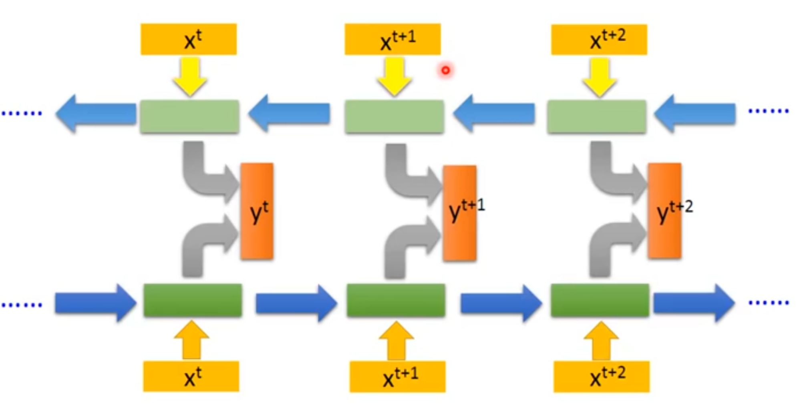

目前为止我们考虑的所有循环神经网络有一个"因果"结构，意味着在时刻的状态只能从过去的序列以及当前的输入捕获信息。 我们还讨论了某些在可用时，允许过去的值信息影响当前状态的模型。
然而，在许多应用中，我们要输出的的预测可能依赖于整个输入序列。
[success]
例子：识别人名
He said, "Teddy bears are on sale!"
He said, "Teddy Roosevelt was a great president！"
例如，在语音识别中，由于协同发音，当前声音作为音素的正确解释可能取决于未来几个音素，甚至潜在的可能取决于未来的几个词，因为词与附近的词之间存在语言学上的依赖：如果当前的词有两种声学上合理的解释，我们可能要在更远的未来（和过去）寻找信息区分它们。 这在手写识别和许多其他序列到序列学习的任务中也是如此，将会在下一节中描述。
双向循环神经网络（或双向RNN）为满足这种需要而被发明{cite?}。 他们在需要双向信息的应用中非常成功{cite?}，如手写识别{cite?}，语音识别{cite?}以及生物信息学{cite?}。
[success]
优点：network在产生output时看过的input更广。
顾名思义，双向RNN结合时间上从序列起点开始移动的RNN和另一个时间上从序列末尾开始移动的RNN。 \fig?展示了典型的双向RNN，其中代表通过时间向前移动的子RNN的状态，代表通过时间向后移动的子RNN的状态。 这允许输出单元能够计算同时依赖于过去和未来且对时刻周围的输入值最敏感的表示，而不必指定周围固定大小的窗口（这是前馈网络、卷积网络或具有固定大小的先行缓存器的常规RNN所必须要做的）。
[success]
书上画得太丑了，还是这个图画得比较清晰

\begin{figure}[!htb] \ifOpenSource \centerline{\includegraphics{figure.pdf}} \else \centerline{\includegraphics{Chapter10/figures/bidirectional_rnn}} \fi \caption{典型的双向循环神经网络中的计算，意图学习将输入序列
这个想法可以自然地扩展到2维输入，如图像，由\emph{四个}RNN组成，每一个沿着四个方向中的一个计算：上、下、左、右。 如果RNN能够学习到承载长期信息，那在2维网格每个点的输出就能计算一个主要捕捉局部信息但同时又依赖于长期输入的表示。 相比卷积网络，应用于图像的RNN计算成本通常更高，但允许同一特征图的特征之间存在长期横向的相互作用{cite?}。
[warning] 允许同一特征图的特征之间存在长期横向的相互作用
实际上，对于这样的RNN，前向传播公式可以写成表示使用卷积的形式，计算自底向上到每一层的输入（在整合横向相互作用的特征图的循环传播之前）。
[warning] [?] 这一段看不懂